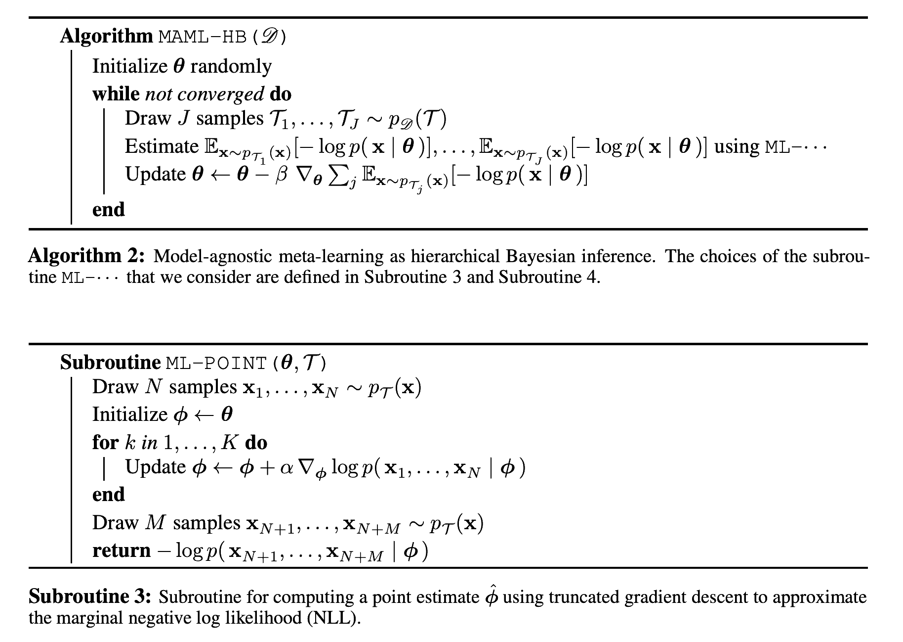
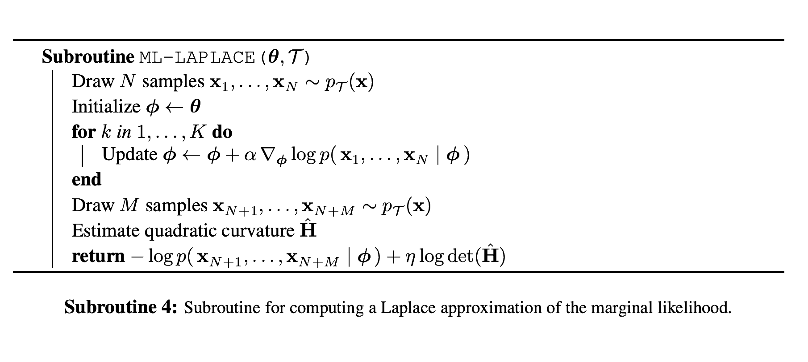

Inner Optimization - Early stopping and Regulazation
Let's bring together the MAML optimization formulation and Hierarchical Bayes formulation of meta-learning. For MAML, the fine-tuning procedure $\left
( \phi_j \leftarrow \theta - \alpha \nabla_{\theta}\frac{1}{N} \sum_n - \log{p(\textbf{x}_{j_n}|\theta)} \;\; \text{for a single gradient step} \right) $ is GD with early stopping.
Early stopping $\approx$ Regularization $\approx$ Prior
To understand this, let's look at the case of Linear Regression Least Squares. GD update rule is:
\begin{equation*}
\phi_k = \phi_{k-1} - \alpha \nabla_{\phi} \left [ || y-X\phi ||_2^2 \right]_{\phi = \phi_{k-1}} = \phi_{k-1} - \alpha X^T (X\phi_{k-1} - y)
\end{equation*}
[2] shows that $k$ iterations of GD, starting from $\phi_0 = \theta$, leads to exact solution of the following regularized least squares optimization problem:
\begin{equation}
\label{eq:opt_problem}
\min{ || y-X\phi ||_2^2 + ||\theta - \phi||_Q}
\end{equation}
, where $||z||_Q = z^T Q^{-1} z$, and Q is SPD matrix that depends
on the step size $\alpha$ and iteration index k as well as on the covariance structure of $X$.
So $k$ steps of GD solve eq. \ref{eq:opt_problem} for some $Q$ - inner loop solves a regularized version of initial objective. Note that eq. \ref{eq:opt_problem} is also equivalent to the posterior
maximization problem:
\begin{equation*}
p(\phi | X, y, \theta) \propto \mathcal{N} (y; X\phi, {\bf I_n}) \cdot \mathcal{N} (\phi; \theta, Q)
\end{equation*}
so $k$ steps of GD also compute the MAP estimate of $\phi$ given a Gaussian-noised observation model and a Gaussian prior over $\phi$ with parameters $\mu_0 = \theta$ and $\Sigma_0 = Q$.
Therefore, in the case of linear regression with squared error, MAML is exactly empirical Bayes using the MAP estimate as the point estimate of $\phi$.
GD Nonlinear case:
still maximize the marginal likelihood using a point estimate for $\phi$
not necessarily the global mode of posterior
but mode of an implicit posterior over $\phi$ resulting from
an empirical loss interpreted as a negative log-likelihood
regularization penalties and the early stopping procedure jointly act as priors
Every iterate of truncated gradient descent is a mode of an implicit posterior. In particular, we are not required to take the gradient descent procedure of fast adaptation that computes $\phi$ to convergence in order to establish a connection between MAML and hierarchical Bayes.

MAML optimization with $K$ inner steps formulated as HB.
Prior $p(\phi | \theta) $:
So far we wrote down what the prior is for least squares linear regression and argued that the intuition of MAML performing Empirical Bayes maintains in more general settings. Let's get a better understanding of this $p(\phi | \theta) $ prior enforced through early stopping in the inner loop of MAML. Consider quadratic approximation of fast-adaptation objective $l(\phi) = - \log p(x_1, ..., x_N | \phi) $ about a minimum $\phi^*$:
\begin{equation*}
l(\phi) = l(\phi^*) + \frac{1}{2} ||\phi - \phi^* ||_{H^{-1}}^2
\end{equation*}
and look at preconditioned gradient descent update rule:
\begin{equation*}
\phi_k = \phi_{k-1} - \mathcal{B} \nabla_{\phi} l(\phi_{k-1})
\end{equation*}
Using the inverse Hessian for $\mathcal{B}$ recovers Newton’s method. Meta-learning the $\mathcal{B}$ matrix via gradient descent provides a method to incorporate task-general information into the covariance of the fast adaptation prior, $p(\phi | \theta) $. This update rule is the same as minimizing
\begin{equation}
\label{eq:quadratic_loss_approx}
||\phi - \phi^*||^2_{H^{-1}} + ||\phi_0 - \phi||_Q^2
\end{equation}
Improving MAML
So far we have only looked at point-estimates for $\phi_j$ in order to simplify Eq. \ref{eq:meta_hb}. Look instead at the Laplace approximation, which assumes the probability distribution for each integrand in \ref{eq:meta_hb} is quadratic around a mode $\phi_j$:
\begin{equation*}
\int p(X_j | \phi_j) p(\phi_j | \theta) \text{d}\phi_j \approx p(X_j | \phi_j^*) p(\phi_j^* | \theta) \det{\frac{H_j}{2\pi}} ^ {-\frac{1}{2}}
\end{equation*}
,where $H_j$ is the Hessian matrix of second derivatives of the negative log posterior. Outer loop optimization objective in Eq. \ref{eq:maml_objective} becomes:
\begin{equation}
\label{eq:laplace_maml_objective}
-\log{p(X|\theta)} \approx \sum_j \left [ -\log p(X_j | \hat{\phi}_j) - \log p(\hat{\phi}_j | \theta) + \frac{1}{2} \log \det (H_j) \right]
\end{equation}
The three terms above:
$ -\log p(X_j | \hat{\phi}_j)$ maximizes data likelihood
$-\log p(\hat{\phi}_j | \theta)$ - implicit regularization imposed by early stopping in inner loop
$\frac{1}{2} \log \det (H_j)$ - this one is new, can be interpreted as a form of regularization that penalizes model complexity
\begin{equation*}
H_j = \nabla^2_{\phi_j}\left[ -\log p(X_j | \phi_j) \right] + \nabla^2_{\phi_j}\left[ -\log p(\phi_j | \theta) \right]
\end{equation*}
The optimization objective in Eq. \ref{eq:laplace_maml_objective} is intractable because:
we don't know $\log p(\phi_j | \theta)$ outside of the quadratic loss approximation in Eq. \ref{eq:quadratic_loss_approx} - which is still intractable because of non-diagonal Gaussian prior.
computing the Hessian is intractable for large models.
Hessian isn't even guaranteed to be positive definite at all points - possibly rendering the Laplace approximation undefined.
Further approximations we make to this Laplace approximation framework:
prior $\log p(\phi_j | \theta)$ is Gaussian with precision $\tau$ - new hyper-parameter.
replace Hessian with curvature matrix $H^*$ that approximates the quadratic curvature of a neural network objective function.

Improved MAML procedure.
Solution for curvature matrix $H^*$ and computation of $\log \det (H)$:
use Fisher information matrix as approximation of curvature
Kronecker-factored approximate curvature (K-FAC) - block-diagonal approximation of Fisher information
each block corresponds to a unique layer in the network
each block is further approximated as a Kronecker product
These two approximations ensure inverse of Fisher information matrix can be computed efficiently for the natural gradient. They also help us in computing $\det (H)$.
References
[1] Grant, E., Finn, C., Levine, S., Darrell, T., and Griffiths, T. L. Recasting gradient-based meta-learning as hierarchical bayes.